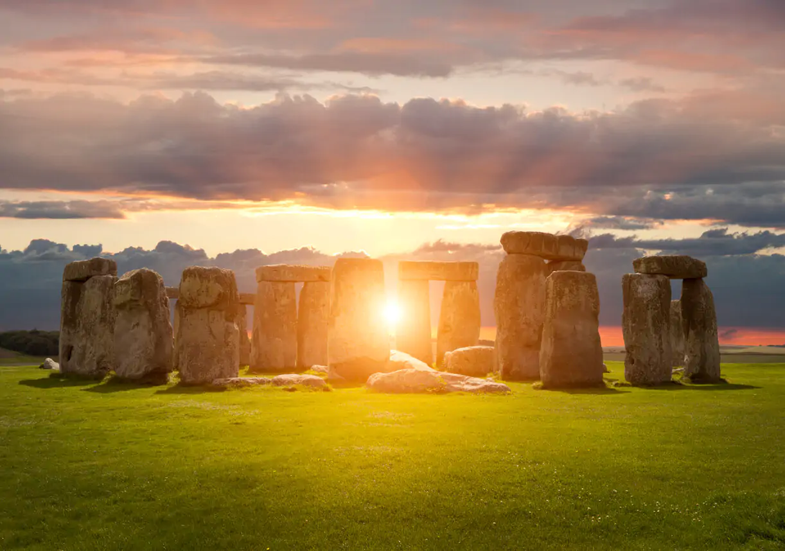

This is Stonehenge

Stonehenge is a prehistoric megalithic structure on Salisbury Plain in
Wiltshire, England, two miles (3 km) west of Amesbury. It consists of an
outer ring of vertical sarsen standing stones, each around 13 feet (4.0 m)
high, seven feet (2.1 m) wide, and weighing around 25 tons, topped by
connecting horizontal lintel stones. Inside is a ring of smaller
bluestones. Inside these are free-standing trilithons, two bulkier
vertical sarsens joined by one lintel. The whole monument, now ruinous, is
aligned towards the sunrise on the summer solstice and sunset on the
winter solstice. The stones are set within earthworks in the middle of the
densest complex of Neolithic and Bronze Age monuments in England,
including several hundred tumuli (burial mounds).
Archaeologists believe that Stonehenge was constructed in several phases
from around 3100 BC to 1600 BC, with the circle of large sarsen stones
placed between 2600 BC and 2400 BC. The surrounding circular earth bank
and ditch, which constitute the earliest phase of the monument, have been
dated to about 3100 BC. Radiocarbon dating suggests that the bluestones
were given their current positions between 2400 and 2200 BC, although they
may have been at the site as early as 3000 BC.
One of the most famous landmarks in the United Kingdom, Stonehenge is
regarded as a British cultural icon. It has been a legally protected
scheduled monument since 1882, when legislation to protect historic
monuments was first successfully introduced in Britain. The site and its
surroundings were added to UNESCO's list of World Heritage Sites in 1986.
Stonehenge is owned by the Crown and managed by English Heritage; the
surrounding land is owned by the National Trust.
Stonehenge could have been a burial ground from its earliest beginnings.
Deposits containing human bone date from as early as 3000 BC, when the
ditch and bank were first dug, and continued for at least another 500
years.
History
Archaeologists have found four, or possibly five, large Mesolithic
postholes (one may have been a natural tree throw), which date to around
8000 BC, beneath the nearby old tourist car-park in use until 2013. These
held pine posts around two feet six inches (0.75 m) in diameter, which
were erected and eventually rotted in situ. Three of the posts (and
possibly four) were in an east to west alignment which may have had ritual
significance. Another Mesolithic astronomical site in Britain is Warren
Field in Aberdeenshire, which is considered the world's oldest lunisolar
calendar, corrected yearly by observing the midwinter solstice. Similar
but later sites have been found in Scandinavia. A settlement that may have
been contemporaneous with the posts has been found at Blick Mead, a
reliable year-round spring one mile (1.6 km) from Stonehenge.
Salisbury Plain was then still wooded, but, 4,000 years later, during the
earlier Neolithic, people built a causewayed enclosure at Robin Hood's
Ball, and long barrow tombs in the surrounding landscape. In approximately
3500 BC, a Stonehenge Cursus was built 2,300 feet (700 m) north of the
site as the first farmers began to clear the trees and develop the area.
Other previously overlooked stone or wooden structures and burial mounds
may date as far back as 4000 BC. Charcoal from the 'Blick Mead' camp 1.5
miles (2.4 km) from Stonehenge (near the Vespasian's Camp site) has been
dated to 4000 BC.[24] The University of Buckingham's Humanities Research
Institute believes that the community who built Stonehenge lived here over
a period of several millennia, making it potentially "one of the pivotal
places in the history of the Stonehenge landscape."
The first monument consisted of a circular bank and ditch enclosure made
of Late Cretaceous (Santonian Age) Seaford chalk, measuring about 360 feet
(110 m) in diameter, with a large entrance to the north east and a smaller
one to the south. It stood in open grassland on a slightly sloping spot.
The builders placed the bones of deer and oxen in the bottom of the ditch,
as well as some worked flint tools. The bones were considerably older than
the antler picks used to dig the ditch, and the people who buried them had
looked after them for some time prior to burial. The ditch was continuous
but had been dug in sections, like the ditches of the earlier causewayed
enclosures in the area. The chalk dug from the ditch was piled up to form
the bank. This first stage is dated to around 3100 BC, after which the
ditch began to silt up naturally. Within the outer edge of the enclosed
area is a circle of 56 pits, each about 3.3 feet (1 m) in diameter, known
as the Aubrey holes after John Aubrey, the seventeenth-century antiquarian
who was thought to have first identified them. These pits and the bank and
ditch together are known as the Palisade or Gate Ditch. The pits may have
contained standing timbers creating a timber circle, although there is no
excavated evidence of them. A recent excavation has suggested that the
Aubrey Holes may have originally been used to erect a bluestone circle. If
this were the case, it would advance the earliest known stone structure at
the monument by some 500 years.
In 2013, a team of archaeologists, led by Mike Parker Pearson, excavated
more than 50,000 cremated bone fragments, from 63 individuals, buried at
Stonehenge. These remains had originally been buried individually in the
Aubrey holes, exhumed during a previous excavation conducted by William
Hawley in 1920, been considered unimportant by him, and subsequently
re-interred together in one hole, Aubrey Hole 7, in 1935. Physical and
chemical analysis of the remains has shown that the cremated were almost
equally men and women, and included some children. As there was evidence
of the underlying chalk beneath the graves being crushed by substantial
weight, the team concluded that the first bluestones brought from Wales
were probably used as grave markers. Radiocarbon dating of the remains has
put the date of the site 500 years earlier than previously estimated, to
around 3000 BC. A 2018 study of the strontium content of the bones found
that many of the individuals buried there around the time of construction
had probably come from near the source of the bluestone in Wales and had
not extensively lived in the area of Stonehenge before death.
Between 2017 and 2021, studies by Professor Parker Pearson (UCL) and his
team suggested that the bluestones used in Stonehenge had been moved there
following dismantling of a stone circle of identical size to the first
known Stonehenge circle (110m) at the Welsh site of Waun Mawn in the
Preseli Hills. It had contained bluestones, one of which showed evidence
of having been reused in Stonehenge. The stone was identified by its
unusual pentagonal shape and by luminescence soil dating from the
filled-in sockets which showed the circle had been erected around 3400 to
3200 BC, and dismantled around 300 to 400 years later, consistent with the
dates attributed to the creation of Stonehenge. The cessation of human
activity in that area at the same time suggested migration as a reason,
but it is believed that other stones may have come from other sources.